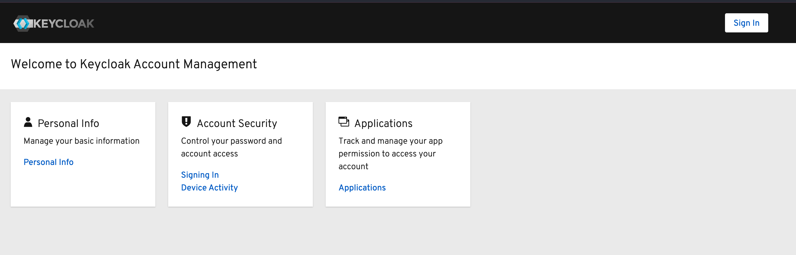
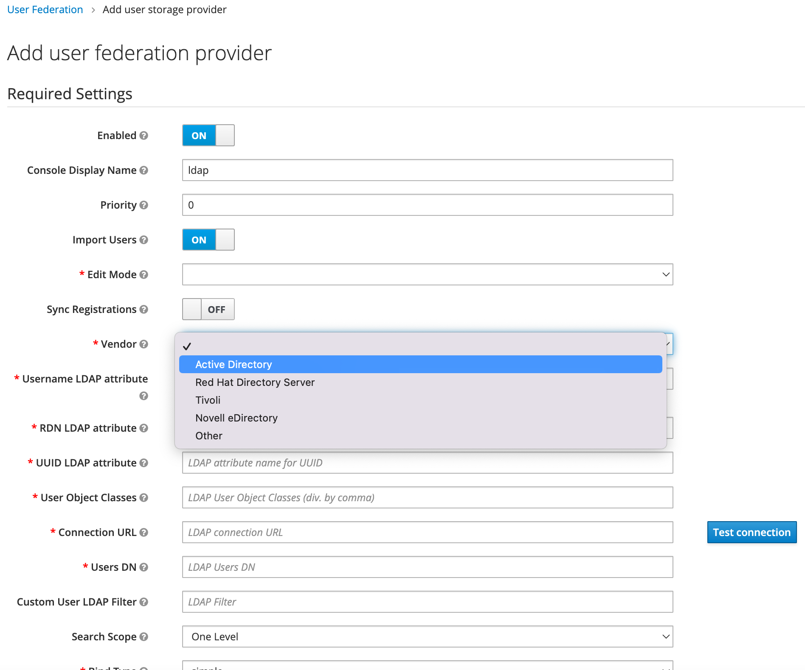

教程: 如何将 Keycloak 与 AD/LDAP 集成？
Keycloak 允许用户与 AD/LDAP 联合。本教程将引导您完成使用 OpenLDAP 服务的用户联合。了解更多信息, 请参考 User Federation。
Keycloak 支持多种 LDAP 服务，包括 Microsoft AD 和 OpenLDAP。本教程将在同一个 VPC 中运行一个 OpenLDAP 服务，并在此演示中使用 Keycloak 服务。
前提条件
您已经通过 AWS CloudFormation 或 AWS CDK 部署了解决方案，并且已经以 Keycloak 管理员用户身份成功登录了 Keycloak 仪表板。
操作步骤
步骤 1. 启动一个用于安装 OpenLDAP 的 EC2 实例
步骤 3. 在 Keycloak 上创建 User Federation
步骤 1. 启动一个用于安装 OpenLDAP 的 EC2 实例
您需要在您的 Keycloak 服务所在的 VPC 中启动 EC2 实例，然后执行以下操作配置此 EC2 实例的安全组，并确保来自 VPC CIDR 的所有流量都可以访问其 LDAP 端口(TCP 389)。
-
打开 Amazon EC2 控制台。
-
在左侧的导航窗中选择 Security Groups。
-
在过滤框中输入
KeyCloakKeyCloakContainer后按回车键，复制 Security group ID，例如 sg-0121f1140bbfd72c6。 -
进入 EC2 实例所在的安全组，添加 Inbound rules，允许 ECS 所在的安全组访问 OpenLDAP 的端口。
-
点击 Save rules 。
步骤 2. 安装 OpenLDAP
在您的 EC2 实例中使用 Docker 安装 OpenLDAP。
- 连接终端到您的 EC2 实例上。
-
执行以下操作：
# 安装 docker，并启动 docker服务 yum install -y docker systemctl start docker # 启动 docker 容器 docker run -p 389:1389 public.ecr.aws/bitnami/openldap:latest -
打开另一个终端并安装OpenLDAP客户端
示例:# 安装LDAP客户端 yum install -y openldap-clients # 查看所有用户信息 ldapsearch -x -b "ou=users,dc=example,dc=org" -H ldap://<EC2_PRIVATE_IP>[root@xxxx ~]# ldapsearch -x -b "ou=users,dc=example,dc=org" -H ldap://<EC2_PRIVATE_IP> # extended LDIF # # LDAPv3 # base <ou=users,dc=example,dc=org> with scope subtree # filter: (objectclass=*) # requesting: ALL # # users, example.org dn: ou=users,dc=example,dc=org objectClass: organizationalUnit ou: users # user01, users, example.org dn: cn=user01,ou=users,dc=example,dc=org cn: User1 cn: user01 sn: Bar1 objectClass: inetOrgPerson objectClass: posixAccount objectClass: shadowAccount userPassword:: Yml0bmFtaTE= uid: user01 uidNumber: 1000 gidNumber: 1000 homeDirectory: /home/user01 # user02, users, example.org dn: cn=user02,ou=users,dc=example,dc=org cn: User2 cn: user02 sn: Bar2 objectClass: inetOrgPerson objectClass: posixAccount objectClass: shadowAccount userPassword:: Yml0bmFtaTI= uid: user02 uidNumber: 1001 gidNumber: 1001 homeDirectory: /home/user02 # readers, users, example.org dn: cn=readers,ou=users,dc=example,dc=org cn: readers objectClass: groupOfNames member: cn=user01,ou=users,dc=example,dc=org member: cn=user02,ou=users,dc=example,dc=org # search result search: 2 result: 0 Success # numResponses: 5 # numEntries: 4
现在您的默认 LDAP 服务已准备就绪。
步骤 3. 在 Keycloak 上创建 User Federation
-
以 Keycloak 管理员用户身份登录到 Keycloak 仪表板。
-
在左侧的导航窗中，选择 User Federation。
-
在 Add provider 下拉菜单中选择 ldap。
-
在新打开的页面中输入以下信息:
- Edit Mode: 修改为
WRITABLE。 - Vendor: 修改为
Other。 - Username LDAP attribute: 输入您的 LDAP attribute name for username，在本教程中使用
cn。 - RDN LDAP attribute: 输入您的 LDAP attribute name for user RDN，在本教程中使用
cn。 - UUID LDAP attribute: 输入您的 LDAP attribute name for UUID，在本教程中使用
uid。 - User Object Classes: 输入您的 LDAP User Object Classes，在本教程中使用
inetOrgPerson, posixAccount, shadowAccount。 - Connection URL: 输入您的 LDAP connection URL，在本教程中使用
ldap://<EC2_PRIVATE_IP>，点击 Test connection 后提示"Success! LDAP connection successful."信息说明LDAP连接正常。 - Users DN: 输入您的 LDAP Users DN，在本教程中使用
ou=users,dc=example,dc=org。 - Bind Type: 修改为
simple。 - Bind DN: 输入您的 LDAP bind DN，在本教程中使用
cn=admin,dc=example,dc=org。 - Bind Credential: 输入您的 LDAP Bind Credentials，在本教程中使用
adminpassword，点击 Test authentication后提示"Success! LDAP authentication successful."信息说明LDAP认证成功。
- Edit Mode: 修改为
-
选择 Save。
-
选择 Synchronize all users。页面提示"Success! Sync of users finished successfully. 2 imported users, 0 updated users"。
-
在左侧的导航窗中选择 Users 。
-
点击 View all users，查看到 user1 和 user2 用户说明导入成功。
步骤 4. 验证 User Federation
使用 account-console 登录验证 User Federation。
-
以 Keycloak 管理员用户身份登录到 Keycloak 仪表板。
-
在左侧的导航窗中，选择 Clients 。
-
选择 account-console 的 Base URL 。
-
您将被重定向到 Keycloak 帐户控制台，单击右上角的 Sign In 按钮。 
-
在 Username or email 中输入 user1 to Username or email，在 Password中输入 bitnami1。
-
选择 Sign In。您已经成功登录到控制台。
常见问题解答
1. Keycloak 是否支持 LDAPS 协议？
是的。Keycloak 同时支持 ldap:// 和 ldaps://。要启用 ldaps://，请确保您的 AD/LDAP 使用 LDAPS 运行并且已正确导入证书。
2. 如果我正在运行 Microsoft AD 服务器，我应该选择哪种供应商类型？
在Vendor参数中选择 Active Directory。 